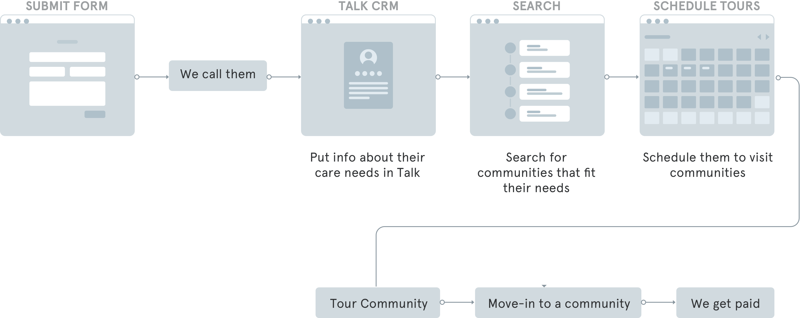
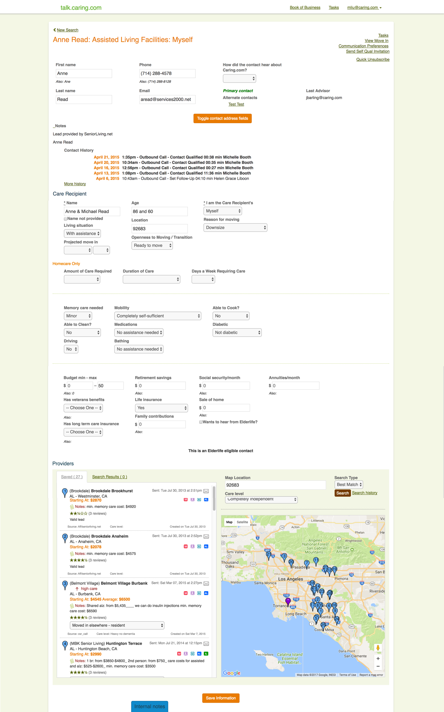
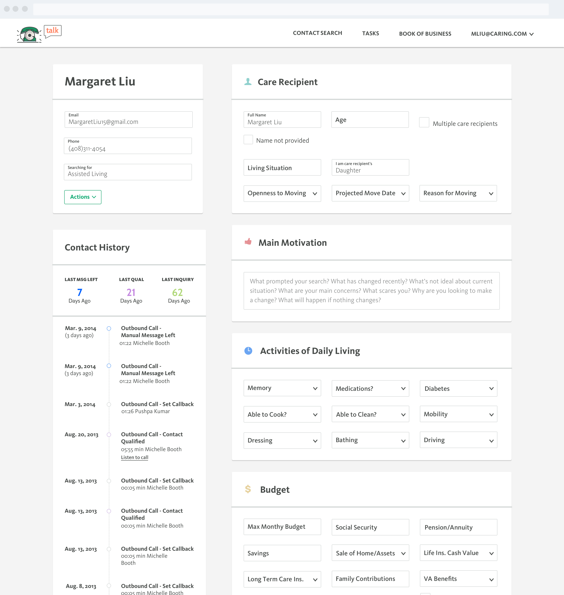
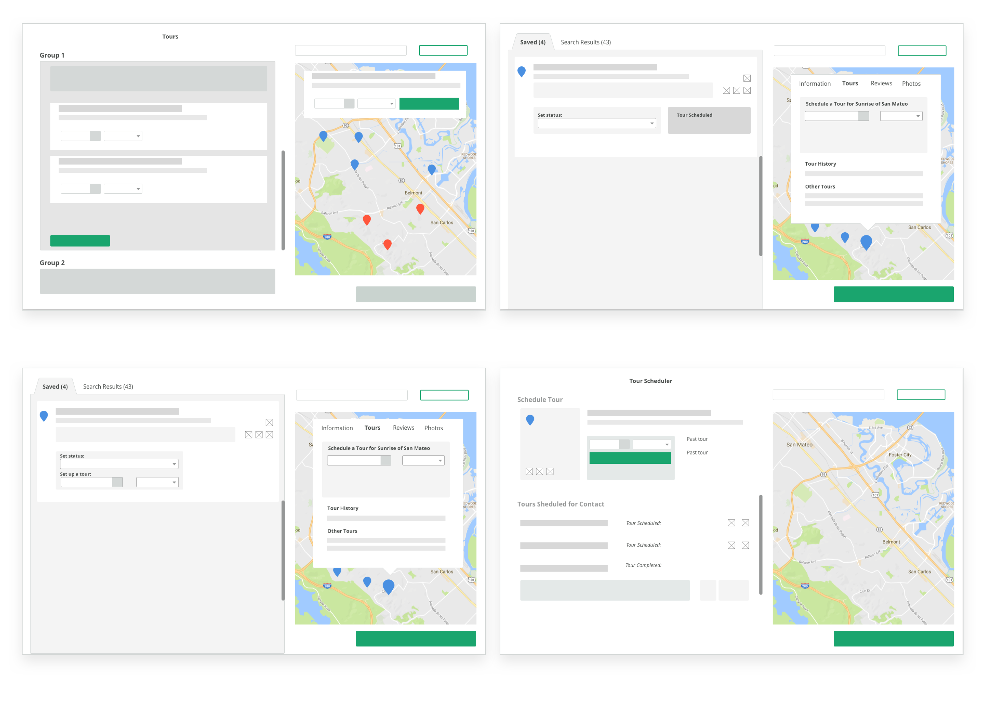
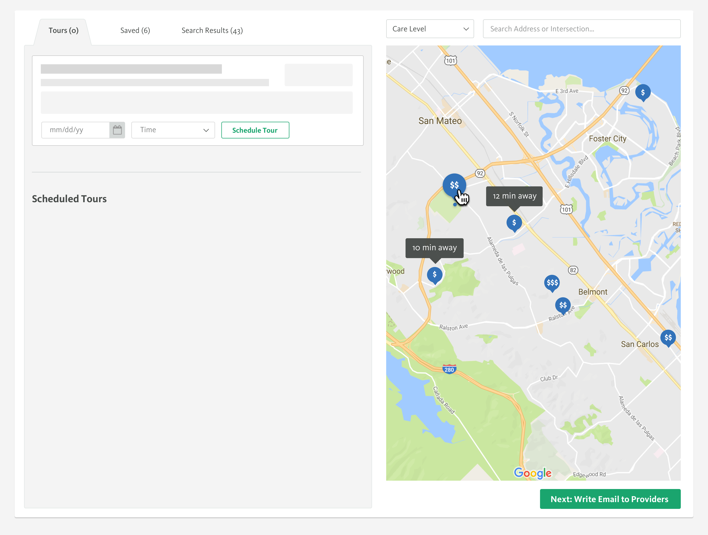
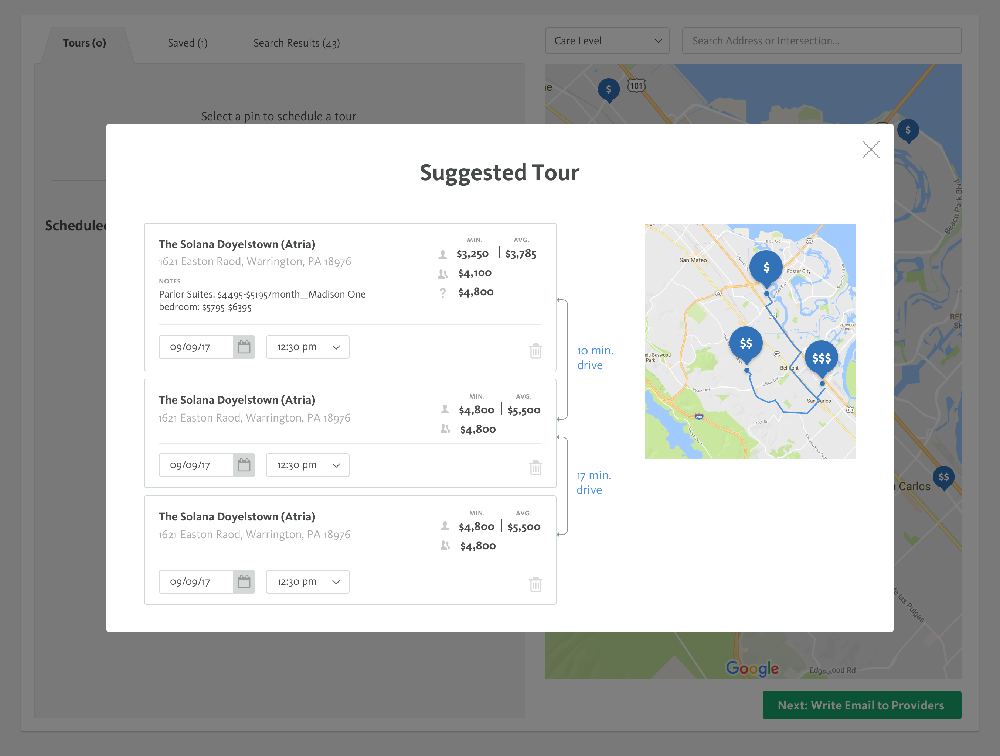

04 CONTACT
Say Hello
Have a cool project? Want to get in contact or just want to say hello? Drop me a line.
Talk is a lead management tool that is used by our sales team to make calls, schedule tasks, match customers to providers, and manage client information. For more context about designing for seniors and the senior care industry, start here.

Talk is a lead management tool that our internal team uses to get information about our customers' care needs and match them to communities that fit those needs.
The problem here was that our sales team would not be able to find the data cells fast enough in our Talk CRM to input customer information while on a call with them. So they would put everything into a google doc and then go back into Talk at the end of the call to input information. This was a huge waste of time.
This is what Talk looked like before I joined:
So the first step here was research. I got to know the sales process really well and wanted to figure out how our sales team was trained on data entry so I could get the names of labels correct and other nomenclature. I also wanted to see what cells had to be values or which ones could be drop downs or yes or no check boxes.
The first thing I did besides a styles change, was work on layout. I put all the information that already available about the contact on the left, with all the information they need to gather about the contact on the right. I wanted to create a narrow frame of view so that they'd be able to scan the content easier. I also listened to many many sales calls to get a feel of the flow of their sales pitch so that I could order the sections based off of that. I wanted to limit how much they were jumping from section to section.
Next, wanted to make contact history more visual so that it was easily digestable. I highlighted three pieces of information that were the most important for the sales team to make split second decisions while on a call.

It was during this project that I noticed the opportunity in tour scheduling. A lot of our users were confused why there was so much focus on the CRM when tours were where the real money was at.
So why tour scheduling? Tours are the number 1 precursor to move ins and we know that they lead to a 30% higher chance of a customer moving in. If we can schedule more tours, our percentage of move ins would most likely increase.
So after doing some research on tour scheduling, I sketched out a few directions and picked on to prototype. In this case I picked the one cheapest to build and easiest to implement. The first prototype isn't meant to be right, but just to serve as a starting ground for getting the business around the same goal and making sure all the teams have our intention aligned. We wanted to start dirty and validate quick.
After doing a lot of testing on the prototype, we got a lot of good findings. I built another prototype that addressed the issues and tested it. This one made it much easier for sales to sell tours.
But I wasn't satisfied with the results and thought we could take it one step further. So I approached our data team about how we could implement their knowledge with our new feature and "Suggested Tours" was born. The algorithm they were able to develop would take information about move in rates, care needs, costs, location, etc and suggest communities that they consumer should tour. This took the guesswork out for the sales team, but we wanted to keep it "suggested" since they would still know things the algorithm didn't.
This was the first product I touched that had clear constraints and many many of them. It was extremely complicated with layers of information and a lot of key stakeholders. It took quite a few iterations to get it to where it is now and I still don’t (if ever) feel like it’s complete. However this journey has been a great learning experience, from supporting other departments to conducting more comprehensive user tests, it has taught me many lessons in designing better.
Halfway through learning our sales flow, I found myself trying to redesign the sales flow instead of Talk. I imagine this is a problem most designers face when they try to redesign everything. I recognized that I need to trust others to be experts in their domain and design to support that.
I also learned that aggregate data is important. Getting too in depth with a few users will lead you to be convinced that their personal tendencies and assumptions are user truths. Supporting your 1-on-1 interviews with mass user research is imperative to shaping the whole user story. I had such a close relationship with a few MVP users that I took their word for a lot of design decisions I initially made. The first iteration of Talk did not perform well because many of the other users did not share the same workflow. Sending out a mass survey was actually a more accurate representation of the user group.
Have a cool project? Want to get in contact or just want to say hello? Drop me a line.